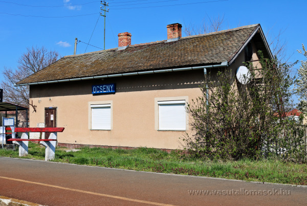
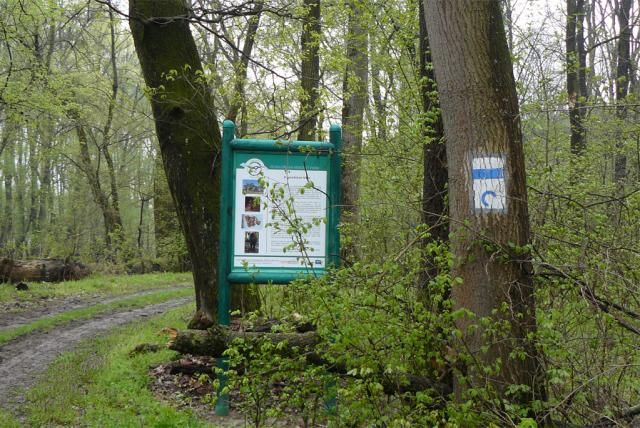
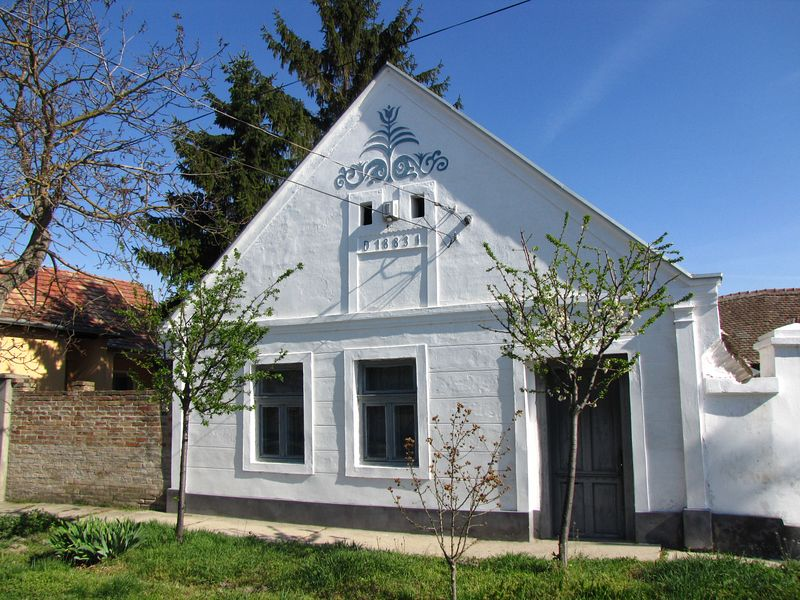

Warum lohnt sich ein Besuch in Őcsény?
Őcsény ist ein ruhiger Ort in der Nähe der Donau und des Gemencer Waldes. Die Umgebung ist besonders attraktiv für Naturfreunde, Spaziergänge und kurze Ausflüge in eine grüne Landschaft.

Entdecke Őcsény mit einem Klick!


Őcsény ist ein ruhiger Ort in der Nähe der Donau und des Gemencer Waldes. Die Umgebung ist besonders attraktiv für Naturfreunde, Spaziergänge und kurze Ausflüge in eine grüne Landschaft.


Ein Spazierweg am Rand des Gemencer Waldes mit Auwäldern, Wasserflächen und abwechslungsreicher Tierwelt.
Route planen
Eine kleine Ausstellung zur lokalen Geschichte, zu traditionellen Gegenständen und zum früheren Alltagsleben des Dorfes.
Route planen
Der Flugplatz ist ein besonderer Punkt der Umgebung und bekannt für kleinere Flugzeuge sowie Ballon- und Luftfahrttraditionen.
Route planen